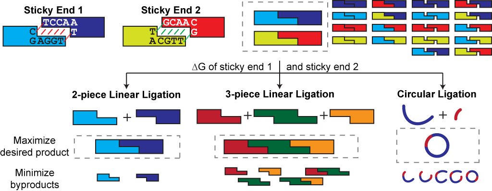

NP-Sticky: Model-Guided Ligation Calculator

The goal of this ligation calculator is to maximize ligation yield and efficiency using thermodynamic principles. Users can either find optimal sticky ends or enter custom sticky ends to calculate their free energies of ligation and to predict ligation product distribution based on input conditions. For applications such as DNA library construction and propagation, users can enter the concentration of the diversity-containing fragment and get recommendations on how to optimize ligation of the full library construct.
For more information, please refer to NP-Sticky: A Web Server for Optimizing DNA Ligation with Non-Palindromic Sticky Ends.
This material is based upon work supported by the National Science Foundation under Grant No. CBET-1055231. Any opinions, findings, and conclusions or recommendations expressed in this material are those of the author(s) and do not necessarily reflect the views of the National Science Foundation.
Last modified by Daphne Ng on Feb 15th, 2014